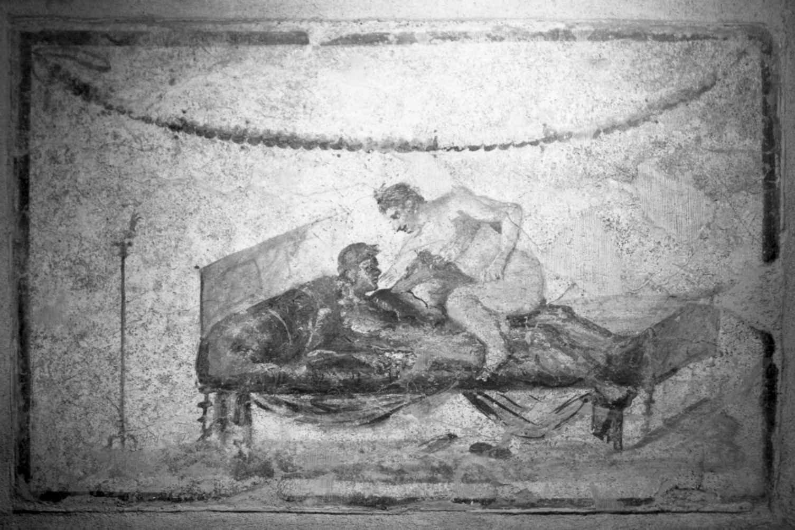

本书最后一章将讨论古代小说，小说相对来说是希腊和罗马文学的后起之秀，却也证明了贯穿整个古代文学的创新和活力。我们将从现存的五种希腊小说实例（均写于公元1世纪中期以后）开始，探讨它们典型的爱情和冒险主题如何广受大众欢迎，并了解它们日趋复杂精妙的叙事技巧。本章还将考察这些希腊散文体虚构作品中所体现的社会和政治价值观，与罗马帝国治下的希腊和罗马观众的价值观有何联系。我们会看到，希腊小说中对文类传统的运用和演绎在佩特罗尼乌斯和阿普列尤斯的拉丁语小说中更加突出，此二人的作品很好地（又一次）验证了罗马作家们以一种独特的罗马风格改写文学传统这一至关重要的能力。
虽然本章讨论的重点是希腊和罗马小说，但还是应该强调一下，古代散文体虚构作品有很多不同的种类——从虚构信函到传记作品到乌托邦故事或奇幻游记。因此，现代世界的虚构散文体叙事作品能有多种形式（从侦探小说到传奇故事，从历史小说到科幻小说，等等），是延续了古典文学的特点。古代读者没有为小说这一文类取一个具体的名字，因为它是在希腊化时期亚历山大港发生的体裁分类的形成时期（见第一章）之后发展起来的。虽然它没有古代的名称，我们仍然能够从现存的文本中看到家族相似性和成熟的定例，于是现代学者专门用“小说”这个名称来指代这七部散文体虚构作品——五部希腊语，两部拉丁语作品——把希腊小说的浪漫重点与拉丁小说的喜剧写实主义风格区分开来。
像自《堂吉诃德》（1605—1615）以来的现代欧洲小说一样，古代希腊小说也是一种包罗万象的文类，吸收了来自很多不同文学形式的元素，像史诗（特别是荷马的《奥德赛》，其中有着各种充满异域情调的冒险故事）及戏剧（特别是新喜剧中那些受到阻挠却最终结局圆满的爱情戏），但也吸纳了来自埃及和近东文化的影响。除了朗格斯的田园牧歌《达夫尼斯与赫洛亚》外，现存的文本展现了不少典型桥段，诸如出身很好的男孩和女孩坠入爱河，然后被分开，经历了种种险境，最后总算重聚。在最早的小说，即卡里同的《卡利罗亚》（公元1世纪中期）中，作者用了一个段落来总结这一文类的主要主题，其中叙述者在第八卷即最后一卷的序言中承诺读者，他们将看到一个圆满的结局：
（8.1）
然而如果认为这些情节都是程式的堆砌而对其不屑一顾，就大错特错了，因为古代读者显然很喜欢这样的套路（现代类型小说的读者也是一样），而在一定程度上，每一部作品的趣味和技巧就在于它能否为这一文类的那些为人熟知的流行主题带来一些变化，那些主题包括：一见钟情、被海盗劫持、风暴与海难、锒铛入狱、生命和贞操危在旦夕、最后一刻的相认，以及婚姻的幸福。
卡里同在《卡利罗亚》中使用的“亲爱的读者”技巧提醒我们，有意操控读者的文学期待从一开始就是小说这种文类的一个特点，这一点很重要，因为希腊（及罗马）小说的文学造诣表明，它的读者是受过教育的群体。（古代评论家忽略了小说，认为它是“次等”文体，但那并未影响读者对它的喜爱。不妨想想那些既喜欢“获得高度评价”的作品，也喜欢最新畅销书或低俗小说的现代读者。）在色诺芬的《安蒂亚与哈布罗科斯》（公元2世纪初到中期）中，我们看到的是一个快节奏的动作惊悚故事，充满悬念的情节一个接着一个，女主人公被活埋了，但随后又被闯入她的坟墓寻找宝藏的劫匪“解救”。在阿基里斯· 塔蒂乌斯的《琉基佩与克勒托丰》（公元2世纪下半叶）中，故事是由克勒托丰本人对作者讲述的，这是希腊小说中唯一一个第一人称叙事的例子（其他的都是第三人称叙事），由于我们与主人公共享观察事件的有限视角，从而巧妙地创造出反讽和张力，就像他（和我们）以为琉基佩被杀害了，但事实上她好好的——不过阿基里斯三次使用这一场景本身就表明，他在取笑其他小说中惯用的貌似死亡的桥段。
朗格斯的《达夫尼斯与赫洛亚》（公元2世纪末或3世纪初）是融合了浪漫小说与忒奥克里托斯式田园诗（第七章）的作品。两位年轻的主人公是在莱斯博斯岛上做牧羊人的时候相遇和相爱的，即便他们最终发现自己本是富有的都市人的后代，他们还是在短暂体验了大城市生活之后，回到自己的牧歌式乐园结婚和养家糊口。最后一部，也是篇幅最长的希腊小说——赫利奥多罗斯的《卡里克勒亚和特阿革涅斯》（共十卷，公元3或4世纪），就展示了相当娴熟精湛的叙事技巧。赫利奥多罗斯带领读者直接切入主题，小说一开头就是一个异乎寻常的神秘场景：一片埃及海滩上到处都是尸体和战利品，一位美丽的女性幸存者正在照顾她受伤的男性同伴——作者用好几卷的篇幅讲述了精彩的背景故事（就像荷马的《奥德赛》那样）之后，我们才了解到两位主人公如何陷入了这样的困境。
和现代小说一样，古代小说也向读者提供了一个可以逃离现实、获得愉悦的世界，然而这些虚构的希腊世界的性质很能说明问题：例如，场景通常是古典的过去，甚至当故事背景设置在罗马帝国时，通篇也没有一个罗马人。因此，和希腊旧喜剧（第四章）中的幻想和乌托邦世界一样，这些小说中的“逃避主义”都带有文化和政治色彩，由此透露出希腊人对政治独立时代的怀念——整个帝国的“希腊”（也就是说希腊语的）社区都有这种情绪，无论是埃及人、叙利亚人、犹太人……——以及罗马人对希腊文化遗产的热爱。
这些小说对理想化的浪漫爱情的关注，对于它们所揭示的性政治也具有重要意义：女主人公在婚前应该保持贞洁，但她们的男性爱人却可以偶尔屈于诱惑。在朗格斯的《达夫尼斯与赫洛亚》中，我们目睹了天真的年轻牧羊人（达夫尼斯15岁，赫洛亚13岁）所受的性教育，包括达夫尼斯由一位来自城市的年长已婚女人进行性启蒙，而在少男少女试图做爱却失败的场景中，既有幽默，又不乏性窥探，“就像公绵羊对母绵羊，公山羊对母山羊”（3.14）。乡村的田园牧歌式“天真无邪”与两位乡下主人公的纯洁无瑕相符（这同样更多是城里人的想象：见第七章）。和早期的英国小说一样，典型的希腊小说情节也都围绕着婚姻展开，而且往往是聪敏而充满灵气的女主人公给读者的印象更为深刻，也是她引导着情节一步步走向大团圆。男人最后仍然占得上风，但如果他们让体面的女人名誉受损，必会因此而受到惩罚。举例而言，在卡里同的《卡利罗亚》中，凯勒阿斯因妒忌而脚踹他怀孕的妻子，一心想要杀了她，最后沦为奴隶（不过别担心，他们还是会从此幸福地生活在一起……）。
现存的主要罗马小说，佩特罗尼乌斯的《萨蒂利卡》（约公元1世纪50—60年代）和阿普列尤斯的《变形记》或《金驴记》（约公元150—180），都假设读者非常熟悉希腊传奇小说的典型故事套路，但又各自把这种文类引向了一个独特的创作方向。佩特罗尼乌斯可能就是尼禄宫廷中的那位政治家和“品味的引领者”（elegentiae arbiter ，是塔西佗对他的称呼），后来因尼禄的心腹提格利努斯妒忌他的影响力并告发他，被迫于公元66年自杀。塔西佗曾描写过这位佩特罗尼乌斯拒绝以禁欲主义的方式死去，而是在死前的最后几个小时里聆听浮夸的诗歌，又在自己的遗嘱中揭露了尼禄沉湎酒色的种种细节（《编年史》16.18—19）。无论如何，《萨蒂利卡》中显示了一种同样不恭和戏仿的精神，它借鉴了许多写于尼禄时代的文学形式（包括史诗、悲剧、哲学专著和讽刺文学），创作的小说既是独树一帜的文类大杂烩，也是对当代罗马社会令人捧腹的尖刻批评。
佩特罗尼乌斯的小说原著很长（或许有20卷），但只有片段存世。不过这些片段中充满各种插曲，描述了小说主人公也是叙述者恩柯皮亚斯的传奇流浪冒险，他和（不忠的）男朋友吉东一起，为寻找奢华无忧的生活和免费晚餐，在时髦的那不勒斯湾和意大利南部那些乌烟瘴气的地方游荡。佩特罗尼乌斯对传奇情节套路的戏仿也是英国小说早期反复使用的技巧：例如，亨利· 菲尔丁的《约瑟夫· 安德鲁斯》（1742）就宣称自己是一部“喜剧传奇”，一开篇就是对塞缪尔· 理查逊的《帕米拉》（1740）的戏仿。关于修辞的争论、诗朗诵、情人间的争吵、放纵的双性恋——《萨蒂利卡》随心所欲的叙事能够满足每一种读者的口味（见图8）。

图8 庞贝古城的一所妓院里的壁画，画的是一个年轻人和妓女在一起（公元1世纪）。佩特罗尼乌斯的叙述者频繁地光顾这类场所
小说的题目“萨蒂利卡”本意为“萨蒂的故事”，本身就显示了它淫秽下流的主题，让人想起希腊神话中那些充满兽欲且终年淫荡妖媚的神物们。和萨蒂一样，恩柯皮亚斯和他的朋友们贪图享乐，一心追求情爱欢愉。但萨蒂的主旨也被喜剧化地削弱了：虽有一位明艳动人的女色情狂（“基尔克”，让人想起荷马的《奥德赛》中勾引男人的女妖）大献殷勤，恩柯皮亚斯（此名意为“裤裆先生”，名副其实）仍然无法勃起，他情急之下，威胁阴茎说要把它阉割，还用一种模仿英雄的悲愤口吻对阴茎说，“这就是我在你那里应得的吗？我人在天堂，你却要将我拖向地狱？”（132）后来，恩柯皮亚斯又把自己的性无能归咎于生殖之神普利阿普斯“可怕的愤怒”（139），戏仿了史诗中那些不友善的神祇。同样，在早先利卡斯（“口交船长”）船上的一个场景中，乔装的恩柯皮亚斯因自己的阴茎而被人认出，他把这一发现比作荷马的《奥德赛》中的著名场景——英雄最终因为身上一处打猎的伤疤而被认出（105）。暂且不论阴茎，“萨蒂利卡”这一题目还暗指罗马的讽刺文学（satura ），其不恭不敬的影响在书中的许多情节中非常明显，特别是特立马乔做东的那些浮夸而毫无品位的宴会，恩柯皮亚斯和他的朋友们下了一番功夫才受到邀请。
《特立马乔的宴会》是这部小说现存的最长的片段，是阶层喜剧和社会讽刺的杰作。特立马乔出身奴隶，白手起家成为百万富翁，力图用琳琅满目的菜肴大宴宾客，但他令人作呕的炫富只会突显他对文化和礼节的无知，如他对希腊神话断章取义——“我有一个碗，上面画着代达罗斯把尼俄伯关进了特洛伊木马中 [1] ”（52）——还有他对满桌宾客大谈憋屁的危险：
（47）
叙述者恩柯皮亚斯对粗俗的暴发户特立马乔的鄙视，反映了出身奴隶之人的社会地位变化给罗马人带来的焦虑，但作者并没有单纯地鼓励读者去嘲笑特立马乔，因为他也同样讽刺了恩柯皮亚斯的势利（他本人就是个窃贼和吃白食的人）。因此，这段故事是对当代罗马拜金主义、财富和阶级的尖锐和滑稽的批评，不仅嘲讽了尼禄时代社会的腐败和堕落，每个人都在争抢金钱、性和权力，同时讽刺了那些和虚伪的希腊人恩柯皮亚斯一样自命不凡，表现出一种道德或社会优越感的人。因此，和自那以后的许多伟大的喜剧小说一样，《萨蒂利卡》也是一部尖锐的社会分析杰作。
就文学视野和精湛技艺而言，阿普列尤斯的小说可与佩特罗尼乌斯的《萨蒂利卡》相媲美，那部小说的原名叫《变形记》，但它更广为人知的题目是《金驴记》（圣奥古斯丁为它命的题目是《神之城》，18.18）。阿普列尤斯于公元125年前后生于玛多鲁斯（如今的阿尔及利亚），他这部雄心勃勃的著作（11卷）是唯一一部完整流传下来的罗马小说。叙述者是一个名叫卢修斯的希腊人，小说讲的是他在打探魔术的诀窍时，意外地变成一头驴的故事。然后他讲述了自己从一个狡诈的主人转手给另一个主人，那些通常十分下流的冒险经历（还有许多是他用自己那双硕大的驴耳朵听到的），直到最后女神伊希斯把他变回了人形，并让他从此崇拜自己。在穿插入主要情节的许多故事中，篇幅最长也最著名的，是丘比特与普赛克的故事（4.28—6.24），普赛克的好奇心（想看看自己的神圣爱人）导致她四处流浪，受了很多苦，多亏神的介入才总算终结——与卢修斯自己的故事十分相似。
和《萨蒂利卡》中的恩柯皮亚斯一样，卢修斯/那头驴也常常对发生在自己身上的事情感到震惊或困惑，他的反应也催生了大量喜剧情节。《变形记》将粗俗与哲学——神秘元素相结合，是它最有创意也最有趣的特点之一。因此，举例来说，当一个有钱的女士看到卢修斯/那头驴在巡回马戏团中变戏法时，她爱上了他，还跟他做了爱，这让他的主人想出了一个聪明的好主意——这头驴可以在付费观看的大众面前表演与一个被定罪的女囚犯做爱。但卢修斯逃跑了，向天后祈祷，后者以伊希斯之形显灵，指导他如何重新变回人形（在第二天的一个为她举行的游行路边撒有很多玫瑰花，只要吃了那些玫瑰花就可以变回人形），并一生崇拜她。
然而叙述者这场通往启蒙和救赎的非凡之旅在最后还有一个转折，卢修斯原来就是阿普列尤斯本人（11.27），这是叙述者变成作者的一场精彩的文学变形，它戏谑的是写小说这个行为，作者在其中创造了虚构人物的身份。（它同样可以与菲尔丁的《约瑟夫· 安德鲁斯》相比，那部小说的结尾揭示约瑟夫就是威尔逊先生失散已久的儿子，后者的生活经历让人想起菲尔丁本人。）所以说，这不是旨在让读者皈依伊希斯和死亡之神奥西里斯等神秘偶像的热心圣徒的天路历程，它的幽默结局把我们带回到了小说序曲的精神，序曲中写道：“读者啊，请注意倾听这个故事；你会喜欢上它的。”但尽管如此，《变形记》的最后一卷还是让我们看到了公元2世纪的非基督徒读者对承诺摆脱肉体束缚和获得美好来生的偶像崇拜发自内心的兴趣，并提醒我们，彼时另一种偶像崇拜正在帝国的东方兴起，终有一日将席卷整个帝国。
[1] 代达罗斯是希腊神话中的著名工匠，他有一个儿子叫作伊卡洛斯。尼俄伯是古希腊神话女性人物之一，曾多次吹嘘其子女，后来因为阿波罗杀了她的子女而悲痛万分，化为石头。特洛伊木马是希腊军队在特洛伊战争中，用来攻破特洛伊城的那只大木马。这里将希腊神话中毫无关系的人物和事件张冠李戴了。